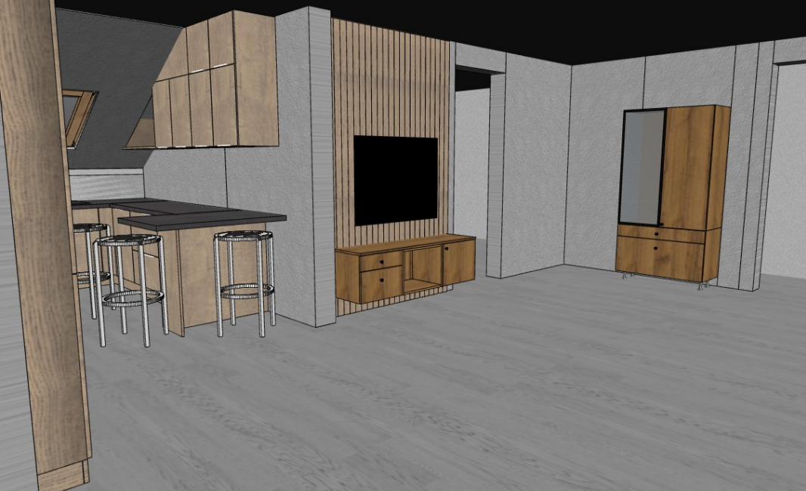

W kuchni ważny jest oryginalny i funkcjonalny design. Dlatego oferujemy zestawy mebli od sprawdzonych producentów, takich jak KAM. Firma działa na rynku już od kilku dekad, produkując ekskluzywne i eleganckie wyposażenie. Kuchnie Kam znalazły uznanie nie tylko w oczach najbardziej wymagających klientów, szukających do swoich mieszkań rozwiązań kompletnych.
Konstrukcje mebli zostały zaprojektowane z myślą o wieloletnim użytkowaniu.
Każdy element jest dokładnie dopasowany, aby kuchnia była funkcjonalna i estetyczna.
Systemy otwierania, zawiasy i prowadnice zapewniają wygodę każdego dnia.
Wykonujemy darmowe projekty od razu po pomiarze!
Korzystamy z najlepszego dostępnego programu na rynku.
